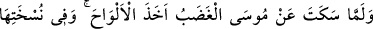
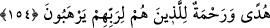

etmektir.
Ruhun tevbesi, ilâhî ma‘rifetlerle süslenmektir. Sırrın tevbesi ise, dünya ve ukbadan
yüz çevirdikten sonra Ulu Hazret’e yönelmektir.
Hz. Celâleddin Rûmî (k.s.) der ki:
Ömür defterini kararttın ise
Tövbe et önceden yaptıklarına
Geçtiyse ömür, kökü bu demdir
Ömür ağacına tövbe suyu verdir
Pişmanlıktan inleyip sızlamaya başlayınca
Günahkârların iniltisinden arş titrer
Kul, günahlardan dönüp amelini düzeltince, Allah da onun halini düzeltir ve kaçırdığı
nimetleri tekrar ona iade eder.
İbrahim b. Edhem’in şöyle dediği nakledilmiştir: Bana anlatıldığına göre
İsrâiloğulları’ndan bir adam, bir buzağıyı anasının gözleri önünde boğazladığı için eli
kurudu. Tam bu halde otururken önüne, yuvasından bir kuş yavrusu düşüverdi.
Hayvancağız sağa sola koşuyor ama ne yapacağını bilemiyordu. Adam onu alıp tekrar
yuvasına koydu. Bu yüzden Allah ona acıyıp elini geri verdi. Mü’mine gereken, tevbeye
ve salih amellere koşmaktır. “Çünkü iyilikler, kötülükleri giderir.” (Hûd, 11/114)
Ebû Zer (r.a.)’ın şöyle dediği rivayet edilmiştir: Bir gün Rasûlullah (s.a.v.)’e : “Yâ
Rasûlallah, bana, cennete yaklaştıracak ve cehennemden uzaklaştıracak bir amel öğret.”
dedim. Buyurdu ki:
“Bir günah işlediğin zaman hemen ardından bir iyilikte bulun. Çünkü iyilikler, on
katı ile karşılık görür.” Allah Teâlâ buyurmuştur ki: “Kim bir iyilik getirirse, ona o
getirdiğinin on katı vardır” (el-En’âm, 6/160).” “Yâ Rasûlallah, “Lâilâhe illallah”
demek de iyiliklerden midir?” diye sordum. “O, iyiliklerin en iyisidir.” buyurdu.[93]
Bil ki en iyi iş, zikirden başkası değildir
Hidayet veren, ancak Allah’tır.
154. Musa’nın öfkesi dinince levhaları aldı. Onlardaki yazıda Rablerinden
korkanlar için hidayet ve rahmet (haberi) vardı.
Kardeşi özür dileyip, kavmi tevbe ettiği için “Mûsâ’nın öfkesi dinince” attığı
“levhaları aldı.” Öfke, Mûsâ (a.s.)’ı dürtüp ona: “Kardeşin, kavminin buzağıya
tapmasını engellemekte ihmalkâr davrandı, böylece senin azarlamanı ve cezalandırmanı